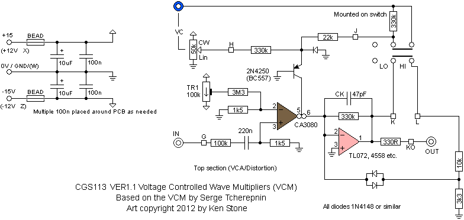
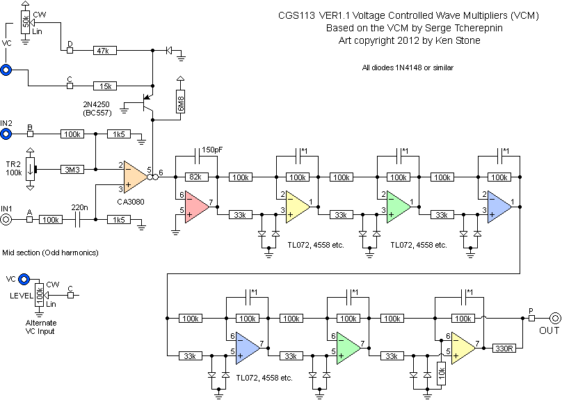
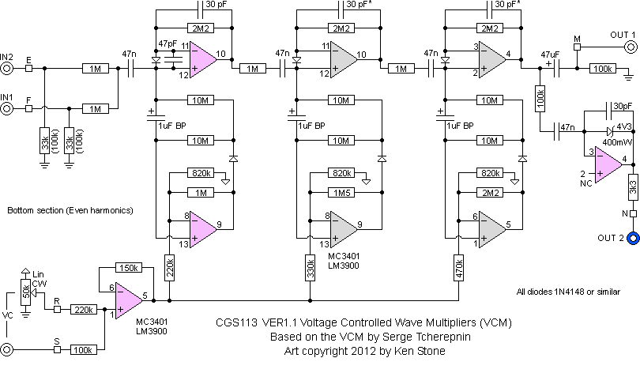
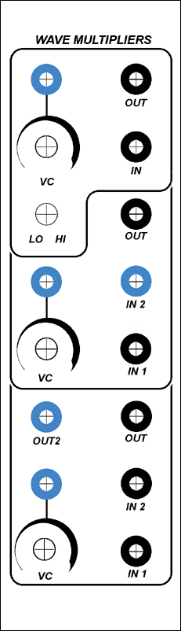

|
This module is based on the Serge Wave Multipliers. To quote the 1982 catalog: For generating and modifying sound, the typical synthesizer patch is VCO-VCF-VCA, linked in series, with suitable control from keyboard, sequencer, or computer. The VCO generates the raw sound, the VCF dynamically varies the timbre (sound quality). and the VCA controls the amplitude and produces the envelope on the sound event. The Serge Modular WAVE MULTIPLIERS (VCM) provide a new link in this chain, representing an advance in synthesizer technology. In this typical patch, the Wave Multiplier could be placed just before the VCF. Like the VCF. the Wave Multiplier affects the timbre. Unlike the VCF, whose action is a subtractive process of filtering frequencies from the input waveform, the Wave Multipliers are able to dynamically process the input waveform to produce new harmonically-related overtones. This function should not be confused with Ring Modulation, since it is a non-linear process using a single audio input. Although it is possible to describe the effect of a VCF by saying the sound gets "bass-heavy", makes a "wah-wah" effect, or sounds "thin" to describe the sound of a Wave Multiplier is much more difficult. The input sound comes out richer in harmonics, somewhat similar to pulse-width modulation and to linear frequency modulation, but with a new characteristic timbre. The nearest we can come to describing the unique sound qualities (there are three different sections) is to say that they alter the timbre in exciting new ways, producing interesting alternative forms of signal processing which are unique in the Serge Modular Music System. Since there are three entirely separate and different types of Wave Multipliers in this module, an enormously varied palette of new effects can be synthesized. It will work on either +/- 12 volts or +/-15 volts without modification, though in the case of the latter, all input voltage sensitivities, and output voltages are proportionally increased. A little on how it works:  The upper multiplier functions as a basic distortion unit, or a VCA, depending on the mode selected.
 The middle multiplier provides a sweep of the odd harmonics (1, 3, 5, 7, 9, 11 and 13th). This gives the most amazing filter like sweeps, by adding harmonic content to the input wave.
 The bottom Wave Multiplier performs controlled full-wave rectification to add even harmonics.
Construction
Before you start assembly, check the board for etching faults. Look for any shorts between tracks, or open circuits due to over etching. Take this opportunity to sand the edges of the board if needed, removing any splinters or rough edges. When you are happy with the printed circuit board, construction can proceed as normal, starting with the resistors first, followed by the IC sockets if used, then moving onto the taller components. Take particular care with the orientation of the polarized components, such as electrolytics, diodes, transistors and ICs. When inserting the ICs in their sockets, take care not to accidentally bend any of the pins under the chip. Also, make sure the notch on the chip is aligned with the notch marked on the PCB overlay. Note that there are several capacitors on the PCB that should be omitted. They are shown in red on the overlay above. Some are marked 30pF on the PCB itself. Although the PCB calls for the use of 4558 dual op-amps, the type actually used varied somewhat from build to build. I would recommend using TL072, which appear to be the most stable in the circuit. If you wish to use other varieties, check that none of the op-amps have gone into self oscillation. On my prototype, I needed to add 47pf across pins 6 and 7 of the top 4558. Another test builder found he required caps on each of the op-amps in the section, as shown on the schematic (marked *1). These can be soldered directly to the rear of the PCB at the IC pins. Chips on the schematic are identified via color code, the colors corresponding to the colors of the resistor color code. The chips on the board are numbered from top to bottom, left to right, with the unused 16 pin location being IC0. IC0 is to allow an LM13700 or similar to be used in place of the two LM/CA3080. Wire the corresponding pins of the first LM3080 location to the pads marked with their numbers on left side of IC0 (5, 3, 2 and 6). Do the same for the second LM3080 to the correspondingly marked pads on the right side of the chip (5, 3, 2, 6 and 4). You will need to add some 30pF capacitors across pins 10 and 11 of IC 7 and pins 3 and 4 of IC8 if the third multiplier shows any instability. Again, use an oscilliscope to check. If you do not have access to a scope, with no input into the multiplier, plug the output into a VCO. The VCO frequency will usually jump up of there is a stability issue.
Pad and part identification
Set UpTwo trim pots are supplied to adjust CV rejection on the top two wave multipliers. If you have access to an oscillicope, use it. If not, use an audio signal, and monitor the output with an amplifier. Feed a signal into the CV input of the upper wave multiplier. Monitor its output. Adjust TR1 for minimum output. Feed a signal into the CV input of the middle wave multiplier. Monitor its output. Adjust TR2 for minimum output. Notes:
Parts list This is a guide only. Parts needed will vary with individual constructor's needs. Alternative part numbers are provided in brackets (). If anyone is interested in buying these boards, please check the PCBs for Sale page to see if I have any in stock. Can't find the parts? See the parts FAQ to see if I've already answered the question. Also see the CGS Synth discussion group.

Article, art & design copyright 2012 by Ken Stone
| |||||||||||||||||||||||||||||||||||||||||||||||||||||||||||||||||||||||||||||||||||||||||||||||||||||||||||||||||||||||||||||||||||||||||||||||||||